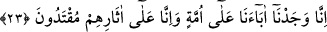
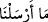
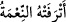

Göğün yükseklerine çıktığında,
Artık merdiven aramak anlamsız olur.
23. Senden önce de hangi memlekete uyarıcı göndermişsek mutlaka oranın
varlıklıları: Babalarımızı bir din üzerinde bulduk, biz de onların izlerine uyarız,
derlerdi.
İşte durum, müşriklerin dâvâlarını ispat için delil getirmekten âciz kalıp taklîdin
eteğine sarılmalarından ibarettir. “Senden önce de hangi memlekete,” köye ve
cemiyete, kavmini Allah’ın azâbından “uyarıcı” bir peygamber “göndermişsek
mutlaka oranın varlıklıları” mütekebbirleri: “Babalarımızı bir din” ve yol “üzerinde
bulduk, biz de onların izlerine” sünnet ve amellerine “uyarız, dediler.”
Âyetteki “__WORD__/mâ erselnâ” sözü, âyetin sonuna kadar istînâfî bir hüküm olup şuna
delâlet etmektedir: Bahsi geçen taklîd anlayışı, müşrikler arasında eskiden beri devam
eden bir sapıklık olup bunların geçmiş baba ve dedelerinin de taklîdden başka
dayanakları yoktu.
Varlık, nimet, tembellik ve atâlet gibi kötü düşünce ve davranışların, bu insanları
gerçeği düşünmekten alıkoyup taklide yöneltmiş olduğunu bildirmek için âyetin beyân
ettiği gerçek özellikle “varlıklı ve elit tabakaya” tahsîsen arzedilmiştir. “__WORD__/etrefethü’n-nimetü” ifâdesi “nimet onu azdırdı” anlamına gelir. Burada ”__WORD__/mütrefîn” olarak bahsedilenler, nimetlerin ve dünyada geniş hayat imkânlarının
kendilerini şımartıp âhiret nimetlerinden meşgul ettiği zenginler, yöneticiler ve elit
tabakadır. Hevâ, heves ve şehevâta dalıp giden, dînin zarûrî hüküm ve prensiplerinden
iyice nefret edip uzaklaşan her serkeş, bu hükme dâhildir.
Hadis-i şerif’te şöyle buyrulur: “Bazılarına ne oluyor da varlıklı, zengin tabakaya
iltifât, tâzim ve teşrifatta bulunuyor, âbid ve zâhid insanları küçümsüyor, nefs ü
hevâlarına uygun buldukları konularda Kur’an’la amel ediyor, nefs ü hevâlarına
muhâlif olan konularda Kur’ân’ı terk ediyorlar. İşte bu zamanda insanlar, Kur’ân’ın
bir kısmına inanıp diğer bir kısmına inanmazlar. Allah’ın taksim ettiği rızkı, sınırlı
ömrü ve sa’y ü gayret göstermeden elde olacak nimeti ele geçirebilmek için tüm
gayretlerini kullanırlar. Ancak sa’y u gayretle elde edilebilecek tam ecir, sevap,
makbul âhiret amelleri ve hiç zarar etmeyecek âhiret ticâreti için çaba sarf
etmezler.”[154]
Bazıları şöyle demiştir: Allah Teâlâ dünyamıza kefil olup bizden âhiret ameli
istemektedir. Keşke âhiretimize kefil olup bizden dünya için çalışmamızı isteseydi.